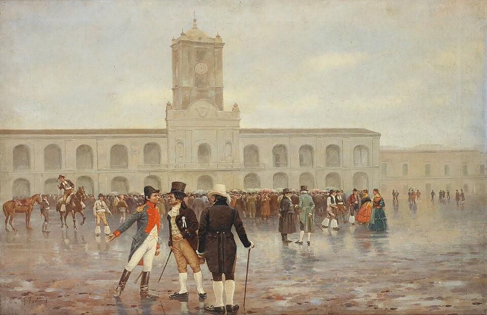

El pueblo de Buenos Aires destituye al virrey y jura su Primera Junta de gobierno
Tras una semana de agitación, el virrey Cisneros quedó apartado del mando y una junta presidida por Cornelio Saavedra gobernará en nombre de estos territorios. En la Plaza, bajo la llovizna, se oyó por primera vez al pueblo preguntar de qué se trata.

La Plaza Mayor amaneció hoy cubierta de vecinos que, pese al cielo encapotado y la llovizna, no se movieron hasta conocer la resolución del Cabildo. Los ánimos venían encendidos desde que se supo que Sevilla cayó en manos de Napoleón y que la Junta que gobernaba España en nombre del rey cautivo ya no existe. Si el rey está preso y su gobierno disuelto, razonan los criollos, el mando vuelve al pueblo, que puede dárselo a quien mejor le plazca.
El cabildo abierto del día 22 ya había votado la cesación del virrey Baltasar Hidalgo de Cisneros, pero los regidores intentaron la víspera una maniobra que indignó a la ciudad: nombrar una junta presidida por el propio virrey depuesto. Los patriotas, con French, Beruti y sus chisperos agolpados en la Plaza, la voltearon en horas. Hoy, ante el clamor de la multitud —hubo quien exigió ver con sus propios ojos a los vecinos que apoyaban el petitorio—, el Cabildo cedió.
La semana que termina merecerá capítulo propio en los anales. Las noticias de la caída de Andalucía llegaron a mediados de mes en una fragata inglesa, y el virrey tardó días en confesarlas por bando, cuando ya corrían de tertulia en tertulia. En el cabildo abierto del 22, ante unos doscientos cincuenta vecinos de los cuatrocientos y tantos invitados, se libró el verdadero duelo de doctrinas: el obispo Lué sostuvo que mientras quedara en América un solo español, a él le tocaba mandar; el doctor Castelli respondió que, caduco el gobierno de España, la soberanía revierte al pueblo; y el voto que hizo mayoría fue el del comandante Saavedra, con una frase que ya se repite: que el mando pase al Cabildo hasta formarse una junta, «y no quede duda de que el pueblo es el que confiere la autoridad o mando».
En la Plaza, la mañana fue de llovizna, paraguas y cintas: French, Beruti y sus chisperos repartían divisas blancas y celestes para distinguir a los patriotas, y cuando los señores capitulares, mirando el atrio ralo por la lluvia, preguntaron dónde estaba el pueblo que pedía tamañas novedades, la respuesta quedó para la historia: que se tocara la campana del Cabildo y, si faltaba badajo, que se tocara generala, y verían los señores si faltaba pueblo. Hubo memoriales con centenares de firmas, empujones en las galerías y los fusiles de los Patricios inclinándose del lado del vecindario: mucha imprenta, nada de sangre.
Queda instalada así una Junta presidida por el comandante Cornelio Saavedra, con los doctores Mariano Moreno y Juan José Paso como secretarios, y entre sus vocales a Manuel Belgrano, Juan José Castelli, Miguel de Azcuénaga, Manuel Alberti, Domingo Matheu y Juan Larrea. Gobernará, dice el acta, en nombre de Fernando VII. Así se escribe; otra cosa es lo que se conversa en voz baja en los cafés: que junta que nace del pueblo difícilmente devuelva la corona lo que la corona ya no puede sostener.